Students have no single trusted place for accurate study-abroad information. Confusion leads to wrong decisions, delays and missed opportunities.
UniPath
Case study · Mobile app
A study-abroad companion that turns a student's profile into a roadmap: matched universities, a timeline with deadlines, a checklist and a mentor, in one app.
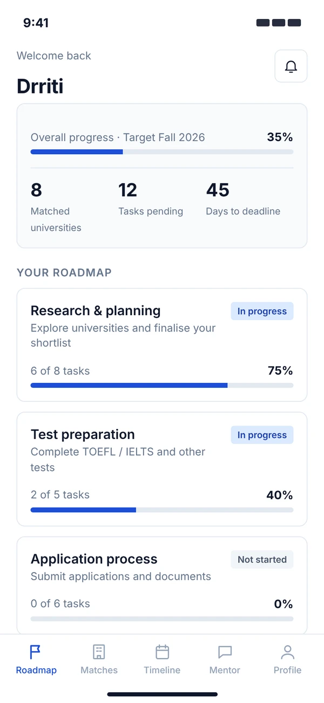
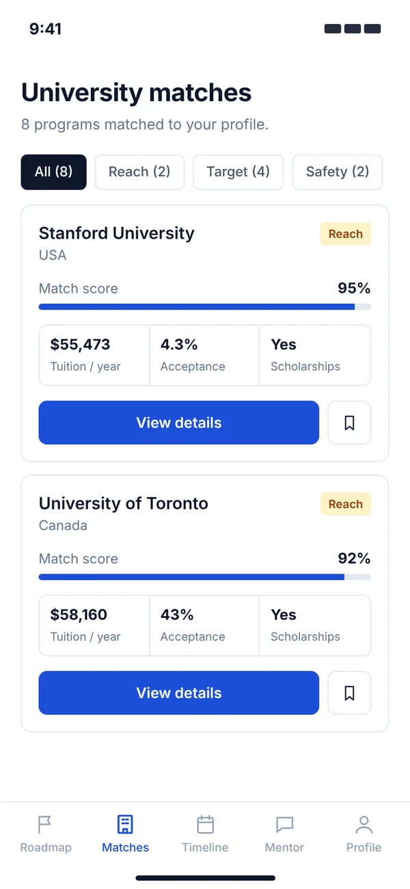
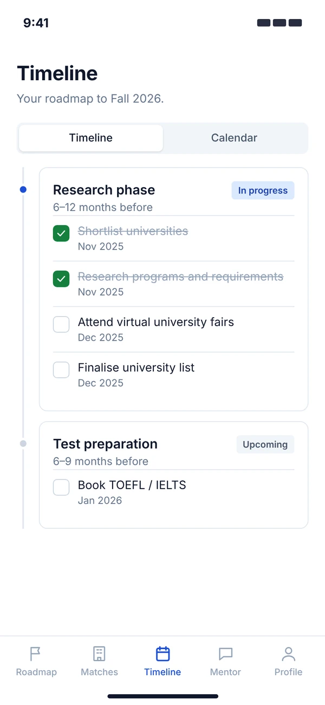
01 — The idea in 30 seconds
UniPath is a mobile platform for students who want to study abroad. It helps them explore universities, check eligibility, track applications and keep documents and deadlines organised.
Students have no single trusted place for accurate study-abroad information. Confusion leads to wrong decisions, delays and missed opportunities.
The student's own profile already decides most of the path: eligibility, budget, destination. The app should read it, not ask them to decode it.
Build a custom roadmap from the profile. Clear steps and matched universities mean smart decisions, with no missed deadlines.
02 — Why it matters
The numbers from my research board point the same way: choosing the right university is difficult, and the process punishes missed steps.
of students say finding the right universities that match their profile is difficult.
international students struggle with missing deadlines for colleges and scholarships.
of study-abroad aspirants feel overwhelmed by complex eligibility rules, document requirements and changing admission criteria.
of students struggle with admission steps like shortlisting, SOPs, LORs and visa procedures because guidance is unclear.
of applicants face avoidable delays or rejections because they miss deadlines, submit incorrect documents or lack proper tracking.
Figures as published on my UniPath Behance board.
03 — The user
The prototype is built around one profile: a 19-year-old in India aiming for a Fall 2026 start in the USA or Canada. What she needs from the app is concrete.
04 — Problem and solution
Every feature in the app maps back to one of these two answers.
Students lack a trusted, single platform for accurate study-abroad information. This confusion leads to wrong decisions, delays and missed opportunities.
UniPath builds a roadmap from each student's profile. Clear steps plus matching universities mean smart decisions and zero confusion.
Students get consultant-backed access and application tracking in one place. No missed deadlines, no misinformation, a smoother journey abroad.
05 — The process
Each step stayed focused on what the student needs to decide next.
Understand where students get stuck: matching universities, eligibility, documents and deadlines.
Frame one problem and two answers. Decide the core: roadmap, matches, timeline, mentor, profile.
Map the flow from onboarding to the five tabs, then design the screens in Figma.
Hi-fi screens, then a redesign pass to make the interface calmer and more professional.
06 — Structure and flow
A short onboarding collects what the app needs. After that, the whole product lives in a five-tab bar, so nothing is more than one tap away.
Onboarding
Main app
Onboarding and profile hold what the student has told us once.
Roadmap and Matches turn the profile into choices, ranked and explained.
Timeline and Mentor turn choices into dated tasks, with help close by.
07 — Onboarding
The welcome screen says what the student gets. Two short forms collect the minimum: who they are and where they study now. A progress bar shows how much is left.
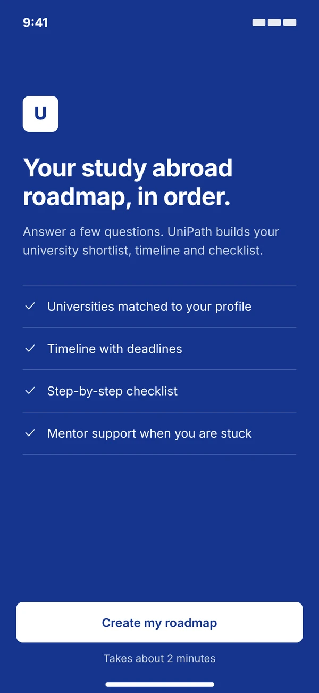
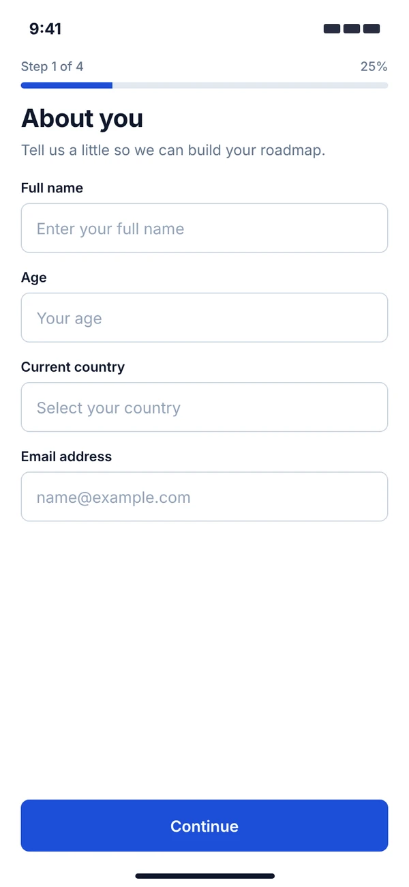
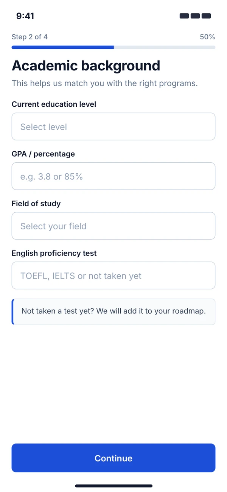
08 — Roadmap
The home tab answers one question: where am I, and what is next? Overall progress and the deadline sit on top, with the phases below.
09 — University matches
Matches are filtered by eligibility, budget and destination. Each card says how well it fits and why, so a student can compare without opening ten tabs.
10 — Timeline and checklist
The app generates the steps for each university from the student's profile. Students can add their own tasks, notes and documents for anything unusual.
11 — AI Mentor and profile
The mentor already knows the profile, so questions like "what documents do I need?" get an answer for this student. The profile tab keeps the data honest and shows how complete it is.
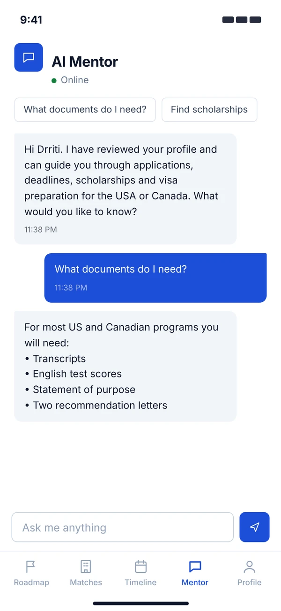
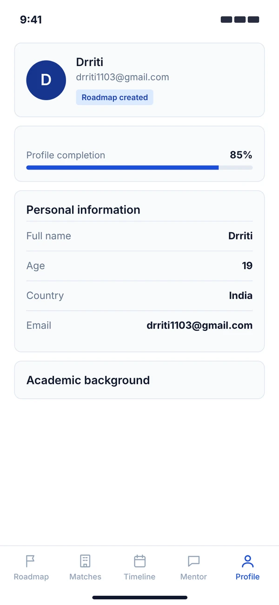
12 — The redesign
The first version had the right structure and the wrong voice. I kept the flow and redesigned the surface: calmer colour, squarer controls, clearer type.
A purple-to-pink gradient on every header, bar and button.
Capsule buttons, pills and tabs everywhere.
Emoji as icons, heavy drop shadows, glass cards.
Form placeholders copied from the first form into the second.
One blue, a navy welcome screen and neutral greys. Amber only for Reach, green only for done.
Rectangular buttons and tags with small radii.
Line icons, hairline borders, a single typeface.
Real labels for every field.
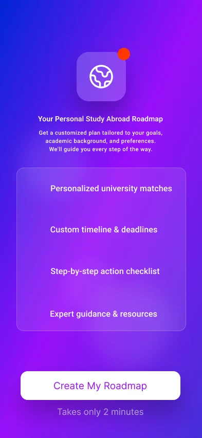
Before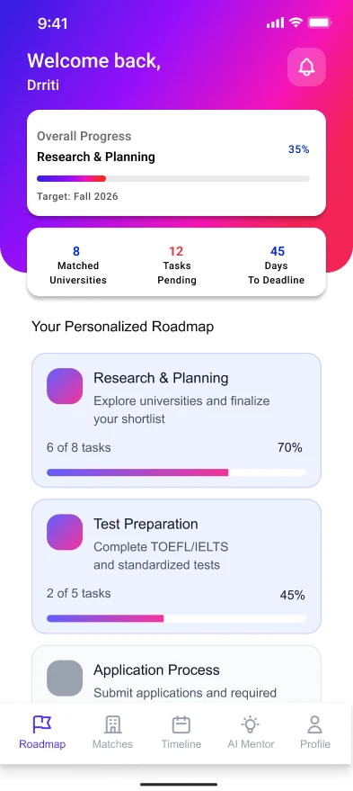
Before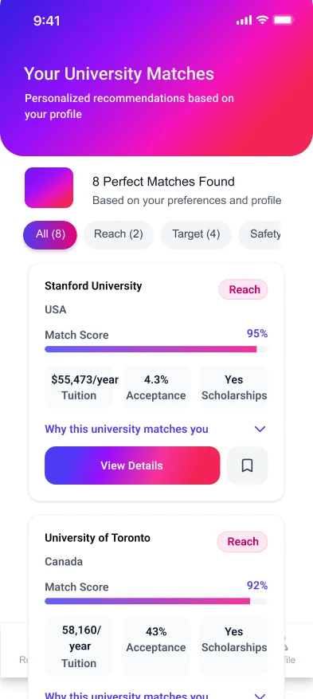
Before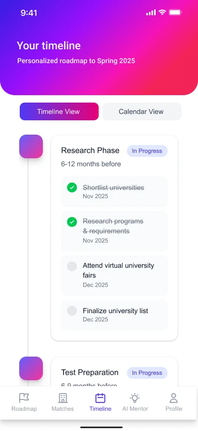
Before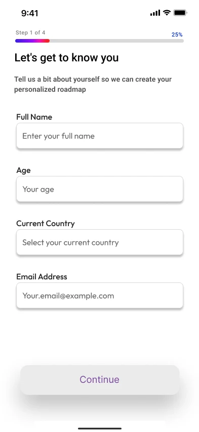
Before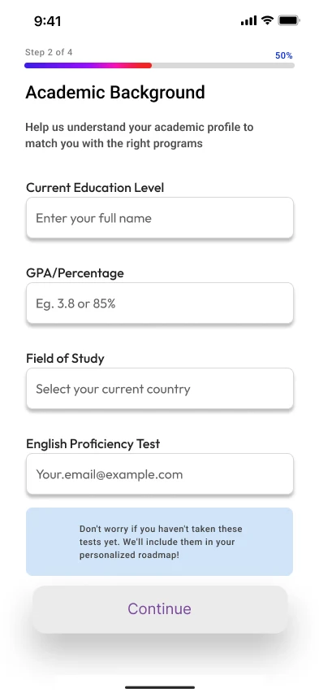
Before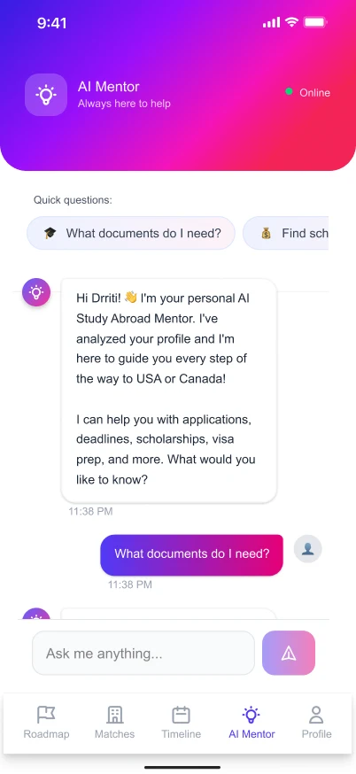
Before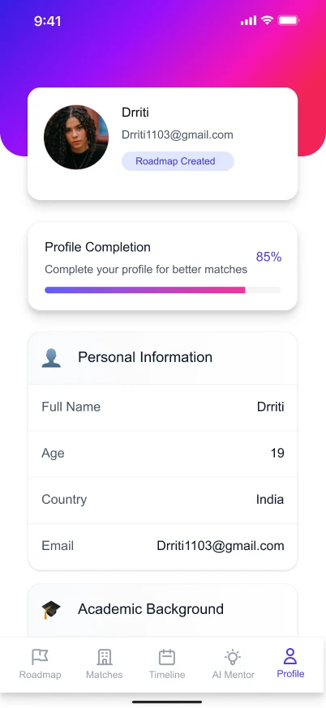
Before13 — Design system
A small, strict system, so every screen reads as one product.
14 — Reflection
For a product that asks students to share grades and plan a move abroad, the interface has to feel dependable. Stripping the gradients and pills made the information louder and the app calmer.
Next I would test the match score with real applicants, to see whether the "why this matches you" explanation builds enough trust to act on.
That was UniPath
That wraps up the UX case studies. Next up is my branding work: three brand identities, from a client project to two assignments.